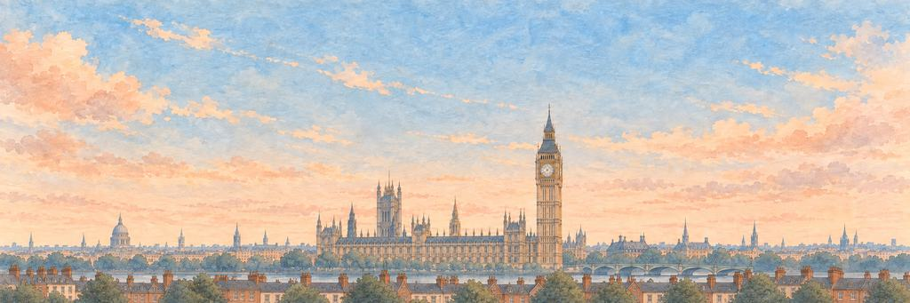

London game pesawat kertas
Mendengar lonceng jam besar berdentang tepat dari atasnya.
Cerobong berdiri rapat di sini. Lewati gagak Tower, lalu Raksasa Guildhall.
Dari Londinium
Bangsa Romawi mendirikan Londinium sekitar 47 M di samping jembatan di atas Sungai Thames. Pada 1666 Kebakaran Besar menghanguskan sebagian besar kota tua berbenteng itu dalam empat hari, dan Christopher Wren membangun kembali 51 gerejanya. Pada 1820-an London jadi kota terbesar di dunia.
“Aku akan menyeberangi Thames di tempat bangsa Romawi membangun jembatan mereka.”
Landmark-nyaMenara jam besar
Menara jam di Gedung Parlemen selesai pada 1859 dan diganti namanya menjadi Menara Elizabeth pada 2012. Big Ben sebenarnya nama lonceng besarnya. Agar jamnya tetap tepat, para perawat jamnya menumpuk koin penny lama di bandul: tiap koin mempercepatnya 0,4 detik sehari.
Siapa yang menjaga keinginan di London.
Penjaga Elite bangun lebih dulu; Penjaga Boss menjaga keinginan itu sendiri. Kenai titik lemah mereka untuk BONK!, daratkan pukulan terakhir untuk KO!, lalu masing-masing tersenyum dan membungkuk.
-
Elite


Gagak Tower
Diberi makan dan dihitung tiap hari · Penjaga Tower of London
Konon jika para gagak pernah meninggalkan Tower of London, Mahkota akan jatuh, jadi setidaknya enam ekor selalu dipelihara di sana, ditambah satu cadangan, dirawat oleh seorang Ravenmaster. Sebuah kisah menyebut Charles II pembuat aturan itu, tetapi tak ada yang bisa membuktikan, dan sebagian sejarawan menduga legendanya jauh lebih muda.
Gagaknya memiringkan kepala, mengangkat topi, dan menatap pesawat. Gagaknya melompat ke samping, mengibaskan bulu, dan tetap di tempat. Gagaknya melipat sayap dan membungkuk. Para gagak tetap tinggal.
“Aku mau menghitungnya dua kali, biar yakin.”
-
Boss

Raksasa Guildhall
Penjaga tertua Kota · Penjaga Guildhall
Kisah lama bilang raksasa menjaga Britania sebelum London berdiri, dan raksasa pahatan sudah berabad-abad memimpin arak-arakan Wali Kota. Sepasang raksasa Guildhall, dipahat pada 1708, terbakar dalam Blitz Desember 1940; patung baru dipahat pada 1953 dan masih berdiri di Guildhall, siap berbaris lagi.
Uap mendesis. Jam di dada sang raksasa mulai berdetak lagi. Sang raksasa terhuyung selangkah. Jam di dadanya melompat, lalu berdetak lagi. Sang raksasa menurunkan tombaknya, dan jamnya berhenti di jam saat ia terbangun.
“Aku mau bertanya seperti apa London di awalnya.”
Menjaga jimat: Tongkat Permata Mahkota. Setiap serangan lebih keras mengenai penjaga berbaju zirah.
London tamat. Lonceng jamnya berdentang tepat di bawah sayapku.
- Gagaknya mengangkat topi padaku. Aku balas mengangkat topiku.
- Sang raksasa sudah menjaga London sejak sebelum kota itu bernama.
Pesawat tiba di London dari New York. Tampilan pesawat khasnya adalah jejak Hujan Lembut.